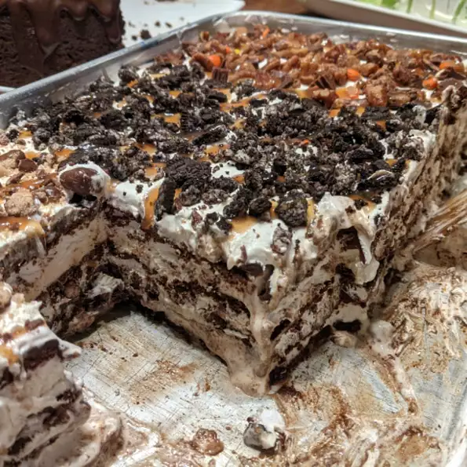

Hot Fudge Ice Cream Bar Dessert

This is an incredibly easy rich and satisfying ice cream dessert made with ice cream sandwiches and fudge sauce. This keeps in the freezer very well and can be eaten straight from the freezer.
Ingredients
- 1 (16 ounce) can chocolate syrup
- ¾ cup peanut butter
- 19 ice cream sandwiches
- 1 (12 ounce) container frozen whipped topping, thawed
- 1 cup salted peanuts
Instructions
- Pour the chocolate syrup into a medium microwave-safe bowl and microwave until hot, about 2 minutes on high, stopping every 30 seconds. Do not allow to boil. Stir peanut butter into hot chocolate until smooth. Allow to cool to room temperature.
- Line the bottom of a 9x13-inch dish with a layer of ice cream sandwiches. Spread half the whipped topping over the sandwiches. Spoon half the chocolate mixture over that. Top with half the peanuts. Repeat layers. Freeze until firm, at least 1 hour. Cut into squares to serve.
Back to home page